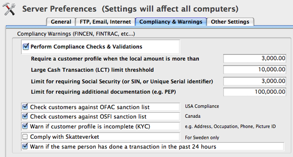

The competitive world of foreign exchange business and new regulatory environment, have created an increasing pressure on MSB and exchange bureaus to conform to new government and banking regulations to deploy automated record keeping software systems.
CurrencyXchanger was designed with the help of industry specialists with robust features to meet all these challenges, and enable foreign exchange companies like yours to become compliant with such regulations. If you are new to this business or would like to learn about the regulations, feel free to contact us and we will guide you in the right direction.
If you are not aware of it, there has been an increasing trend about banks, credit unions and other financial institutions closing down the bank accounts of MSB (Money Service Businesses). This phenomenon is more prevalent in the US and Canada, but have been followed in other countries too.
The general impression is that banks are trying to kill their competition by eliminating their ability to bank. Although that may seem like a valid perception, it is not the general purpose of this practice. The reason boils down to risk vs. benefit management. MSBs are inherently "high risk" as they can involuntarily help facilitate money laundering and terrorist financing through lack of proper systems and processes in place.
There are more than one factor or two that determine the risk score of an MSB. Banks have to go through a very long and thorough process of risk-assessment to evaluate the capacity of an MSB in terms of fighting money laundering and terrorist financing.
Every bank has a different way of evaluating their customers, but most share some common criteria. These are some of the issues that could influence the bank's decision:
CurrencyXchanger has provisions for AML compliance that can be configured for different countries based on the local laws. The preference setting allows different thresholds to be set for different transactions. Furthermore, the managers can configure the software to stop the user from continuing a transaction or simply allowing them to continue.

CurrencyXchanger can automatically cross-reference the name of all entities recorded in the system against the consolidated list of names and entities that have been blacklisted by AML authorities.
If a match is found against any of the sanctioned lists, a dialog box will pop up to display the origin of the match. The system will automatically block the transaction until proper due diligence is complete by the teller or the person recording the transaction. The system will warn the user several times before the transaction can be completed.
For your next AML Compliance audit make sure you have the following documents in order:
Le monde concurrentiel des opérations de change et le nouvel environnement réglementaire ont créé une pression croissante sur les MSB et les bureaux de change pour qu'ils se conforment aux nouvelles réglementations gouvernementales et bancaires afin de déployer des systèmes logiciels automatisés de tenue de registres.
CurrencyXchanger a été conçu avec l'aide de spécialistes du secteur avec des fonctionnalités robustes pour relever tous ces défis et permettre aux sociétés de change comme la vôtre de se conformer à ces réglementations. Si vous êtes nouveau dans cette entreprise ou souhaitez en savoir plus sur la réglementation, n'hésitez pas à nous contacter et nous vous guiderons dans la bonne direction.
Si vous ne le savez pas, les banques, les coopératives de crédit et d'autres institutions financières ont de plus en plus tendance à fermer les comptes bancaires des MSB (Money Service Businesses). Ce phénomène est plus répandu aux États-Unis et au Canada, mais a également été suivi dans d'autres pays.
L'impression générale est que les banques tentent de tuer leurs concurrents en éliminant leur capacité de banque. Bien que cela puisse sembler être une perception valable, ce n'est pas l'objectif général de cette pratique. La raison se résume à la gestion des risques par rapport aux avantages. Les ESM sont intrinsèquement « à haut risque », car elles peuvent involontairement contribuer à faciliter le blanchiment d'argent et le financement du terrorisme en raison de l'absence de systèmes et de processus appropriés en place.
Il existe plus d'un facteur ou deux qui déterminent le score de risque d'une ESM. Les banques doivent passer par un processus très long et approfondi d'évaluation des risques pour évaluer la capacité d'une ESM en termes de lutte contre le blanchiment d'argent et le financement du terrorisme.
Chaque banque a une manière différente d'évaluer ses clients, mais la plupart partagent certains critères communs. Voici quelques-uns des problèmes qui pourraient influencer la décision de la banque :
CurrencyXchanger a des dispositions pour la conformité AML qui peuvent être configurées pour différents pays en fonction des lois locales. Le paramètre de préférence permet de définir différents seuils pour différentes transactions. De plus, les gestionnaires peuvent configurer le logiciel pour empêcher l'utilisateur de poursuivre une transaction ou simplement lui permettre de continuer.
CurrencyXchanger peut automatiquement croiser le nom de toutes les entités enregistrées dans le système avec la liste consolidée des noms et des entités qui ont été mis sur liste noire par les autorités AML.
Si une correspondance est trouvée par rapport à l'une des listes sanctionnées, une boîte de dialogue apparaîtra pour afficher l'origine de la correspondance. Le système bloquera automatiquement la transaction jusqu'à ce que la diligence raisonnable soit terminée par le caissier ou la personne enregistrant la transaction. Le système avertira l'utilisateur plusieurs fois avant que la transaction puisse être effectuée.
Pour votre prochain audit de conformité AML, assurez-vous d'avoir les documents suivants en ordre :
El mundo competitivo del negocio de cambio de divisas y el nuevo entorno regulatorio han creado una presión cada vez mayor sobre los MSB y las casas de cambio para cumplir con las nuevas regulaciones gubernamentales y bancarias para implementar sistemas de software de mantenimiento de registros automatizados.
CurrencyXchanger fue diseñado con la ayuda de especialistas de la industria con características sólidas para enfrentar todos estos desafíos y permitir que las empresas de cambio de divisas como la suya cumplan con dichas regulaciones. Si es nuevo en este negocio o desea conocer las regulaciones, no dude en contactarnos y lo guiaremos en la dirección correcta.
Si no lo sabe, ha habido una tendencia cada vez mayor sobre los bancos, cooperativas de crédito y otras instituciones financieras que cierran las cuentas bancarias de MSB (Negocios de servicios monetarios). Este fenómeno es más frecuente en los EE. UU. y Canadá, pero también se ha seguido en otros países.
La impresión general es que los bancos están tratando de matar a su competencia eliminando su capacidad para realizar operaciones bancarias. Aunque pueda parecer una percepción válida, no es el propósito general de esta práctica. La razón se reduce a la gestión de riesgos frente a beneficios. Los MSB son inherentemente de "alto riesgo", ya que pueden ayudar involuntariamente a facilitar el lavado de dinero y el financiamiento del terrorismo a través de la falta de sistemas y procesos adecuados.
Hay más de uno o dos factores que determinan la puntuación de riesgo de un MSB. Los bancos tienen que pasar por un proceso muy largo y exhaustivo de evaluación de riesgos para evaluar la capacidad de una MSB en términos de lucha contra el lavado de dinero y el financiamiento del terrorismo.
Cada banco tiene una forma diferente de evaluar a sus clientes, pero la mayoría comparte algunos criterios comunes. Estas son algunas de las cuestiones que podrían influir en la decisión del banco:
CurrencyXchanger tiene disposiciones para el cumplimiento de AML que se pueden configurar para diferentes países según las leyes locales. La configuración de preferencias permite establecer diferentes umbrales para diferentes transacciones. Además, los administradores pueden configurar el software para evitar que el usuario continúe con una transacción o simplemente permitirle continuar.
CurrencyXchanger puede hacer una referencia cruzada automática del nombre de todas las entidades registradas en el sistema con la lista consolidada de nombres y entidades que han sido incluidas en la lista negra por las autoridades ALD.
Si se encuentra una coincidencia con cualquiera de las listas sancionadas, aparecerá un cuadro de diálogo para mostrar el origen de la coincidencia. El sistema bloqueará automáticamente la transacción hasta que el cajero o la persona que registre la transacción complete la debida diligencia. El sistema advertirá al usuario varias veces antes de que se pueda completar la transacción.
Para su próxima auditoría de Cumplimiento AML, asegúrese de tener los siguientes documentos en orden:
Die wettbewerbsintensive Welt des Devisengeschäfts und das neue regulatorische Umfeld haben einen zunehmenden Druck auf MSB und Wechselstuben ausgeübt, sich an neue Regierungs- und Bankenvorschriften zu halten, um automatisierte Aufzeichnungssoftwaresysteme einzusetzen.
CurrencyXchanger wurde mit Hilfe von Branchenspezialisten mit robusten Funktionen entwickelt, um all diese Herausforderungen zu meistern und es Devisenunternehmen wie Ihrem zu ermöglichen, solche Vorschriften einzuhalten. Wenn Sie neu in diesem Geschäft sind oder mehr über die Vorschriften erfahren möchten, können Sie sich gerne an uns wenden, und wir werden Sie in die richtige Richtung führen.
Falls Sie sich dessen nicht bewusst sind, gibt es einen zunehmenden Trend, dass Banken, Kreditgenossenschaften und andere Finanzinstitute die Bankkonten von MSB (Money Service Businesses) schließen. Dieses Phänomen ist in den USA und Kanada weiter verbreitet, wurde aber auch in anderen Ländern verfolgt.
Der allgemeine Eindruck ist, dass Banken versuchen, ihre Konkurrenz zu töten, indem sie ihnen die Fähigkeit zum Bankgeschäft nehmen. Obwohl dies wie eine gültige Wahrnehmung erscheinen mag, ist es nicht der allgemeine Zweck dieser Praxis. Der Grund läuft auf das Risk vs. Benefit Management hinaus. MSBs sind von Natur aus „hohes Risiko“, da sie unfreiwillig dazu beitragen können, Geldwäsche und Terrorismusfinanzierung zu erleichtern, da keine geeigneten Systeme und Prozesse vorhanden sind.
Es gibt mehr als einen oder zwei Faktoren, die die Risikobewertung eines MSB bestimmen. Banken müssen einen sehr langen und gründlichen Prozess der Risikobewertung durchlaufen, um die Kapazität eines MSB im Hinblick auf die Bekämpfung von Geldwäsche und Terrorismusfinanzierung zu bewerten.
Jede Bank hat eine andere Art, ihre Kunden zu bewerten, aber die meisten haben einige gemeinsame Kriterien. Dies sind einige der Punkte, die die Entscheidung der Bank beeinflussen könnten:
CurrencyXchanger verfügt über Bestimmungen zur AML-Compliance, die für verschiedene Länder basierend auf den lokalen Gesetzen konfiguriert werden können. Die Präferenzeinstellung ermöglicht es, unterschiedliche Schwellenwerte für unterschiedliche Transaktionen festzulegen. Darüber hinaus können die Manager die Software so konfigurieren, dass der Benutzer daran gehindert wird, eine Transaktion fortzusetzen, oder ihm einfach erlaubt wird, fortzufahren.
CurrencyXchanger kann die Namen aller im System erfassten Unternehmen automatisch mit der konsolidierten Liste von Namen und Unternehmen vergleichen, die von AML-Behörden auf die schwarze Liste gesetzt wurden.
Wenn eine Übereinstimmung mit einer der sanktionierten Listen gefunden wird, wird ein Dialogfeld eingeblendet, um den Ursprung der Übereinstimmung anzuzeigen. Das System blockiert die Transaktion automatisch, bis der Kassierer oder die Person, die die Transaktion aufzeichnet, die ordnungsgemäße Sorgfaltspflicht erfüllt hat. Das System warnt den Benutzer mehrmals, bevor die Transaktion abgeschlossen werden kann.
Stellen Sie für Ihr nächstes AML-Compliance-Audit sicher, dass Sie die folgenden Dokumente in Ordnung haben: